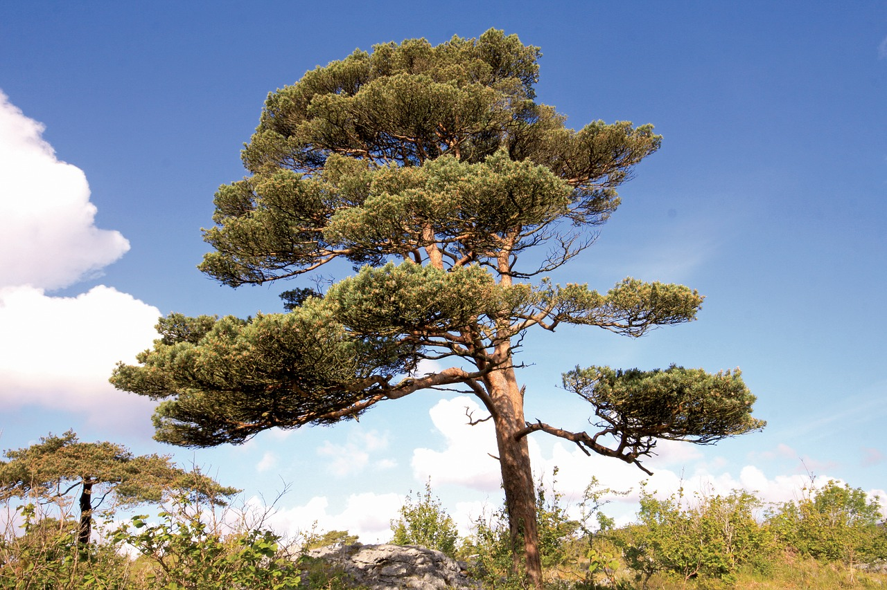
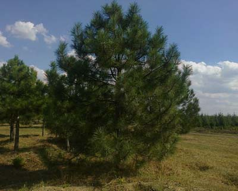
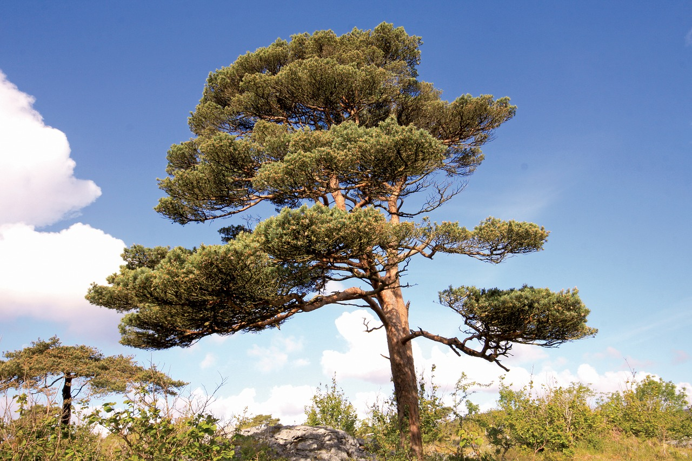
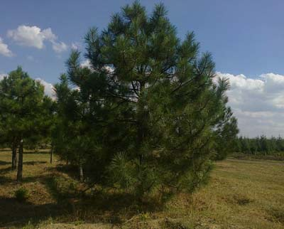

Природный растительный покров Беларуси занимает около 70% территории республики. Насчитывается около 12 тысяч видов растений. В лесах Беларуси произрастают в основном ценные породы деревьев: сосна, ель, дуб, берёза, осина, ольха. Более 200 видов растений охраняются государством.